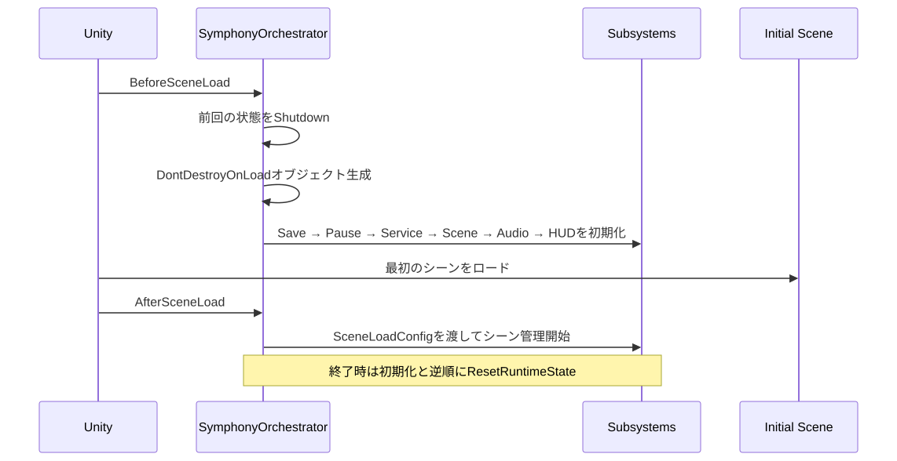

この文書は、パッケージ内を移動するときや、公開型どうしの関係を確認するときの構成図です。モジュールごとのAPI使用例、実装時の注意、Editor機能、内部構造はModules/を参照してください。

SymphonyFrameWork: Runtime API、Component、設定型、Utilityを含むメインアセンブリ。SymphonyFrameWork.Core: RuntimeとEditorが共有する定数・基盤。利用側が通常直接参照する必要はない。SymphonyFrameWork.Editor: Editor専用の設定画面、管理ウィンドウ、Drawer、Generator。Playerビルドには含まれない。SymphonyFrameWork.Enum: 利用プロジェクトのScene、Tag、Layer、Audio Groupから生成されるアセンブリ。利用する場合だけ消費者側asmdefから参照する。参照方向はEditor → Runtime → Coreです。RuntimeまたはCoreからEditorへ逆参照しません。
SymphonyFrameWork/
├─ Core/ Runtime／Editor共通の定数と基盤
│ └─ Internal/ パッケージ内部だけで使う実装
├─ Runtime/ Playerビルドへ含まれる機能
│ ├─ Attribute/ Inspector属性
│ ├─ Component/ GameObjectへ追加するComponent
│ ├─ Configs/ 設定の検索とinternal設定型
│ ├─ Debug/ HUD、Logger、StopWatch
│ ├─ Interface/ 注入・初期化などの公開契約
│ ├─ Orchestrator/ 自動初期化を行うComposition Root
│ ├─ Service/ Scene、Service Locator、Save、Audio、Pause
│ └─ Utility/ Awaitable、Tween、文字列等の補助
├─ Editor/ Editor専用UI、Drawer、Generator
├─ Samples~/Runtime/ Package Managerから導入する利用例（Unityのインポート対象外）
├─ Tests/ EditMode／PlayModeテスト
└─ Documentation~/ Asset Importされない利用者向け詳細文書（Modules/にモジュール別文書）各機能のInternal/は公開APIではありません。利用側コードとSampleはInternal/の型へ依存しません。
SymphonyOrchestratorがComposition Rootです。利用側でBootstrapを作る必要はありません。

Play ModeのDomain Reloadが無効でも状態を持ち越さないよう、開始時に既存状態を破棄し、終了時は初期化済みサブシステムを逆順で解放します。

Facadeは利用側の入口、interfaceと抽象classは利用側が実装する拡張点です。ConfigとManagerの内部実装はFacadeの背後に隠し、利用側へ公開しません。
サブシステム個別の内部構造は、各モジュール文書を参照してください。

この連携が必要なシーンではUnity標準のSceneManager.LoadSceneを直接使わず、SceneLoaderを入口にします。
この文書は Assets/SymphonyFrameWork/Documentation~/Architecture.md から生成しています。編集は正本のMarkdownへ行ってください。